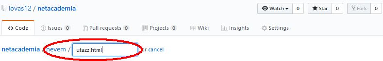

NetAcademia HTML és CSS alapozó tanfolyam 1.
Itt gyakorolhatod mit tanultál a NetAcademia HTML és CSS alapozó tanfolyam 1. során.
Első feladat: csinálj egy könyvtárat magadnak a beceneveddel
megjegyzés: a github.com -on a file-ok létrehozása kicsit más, mint ahogy a tanfolyamon az windows asztalon dolgozunk,
de ne aggódj, ez sem nezezebb, csak itt mindent a böngészőben lehet csinálni. Először is ..
- menj lovas12:netacademia GitHub oldalra.
- kattints a "Create new file" gombra

- a név mezőbe írd be a nevedet, egy "/" jelet és hogy "utazz.html". A "/" beírásakor a nevedet kiemeli, az lesz a könyvtár neve

A videóban "utazz.htm" -nek nevezik, most kb mindegy, hogy 'htm' vagy 'html' végződést használunk.
- Szerkeszd a tartalmát a videóban mutatottak szerint.
- Mentsd el az oldal alján található zöld színű "Commit new file" gombbal.

megj: további szerkesztések a gomb felirata "Commit changes" lesz.
- Kis idő elteltével az eredményt megtekintheted egy új github.io oldalon, a
https://lovas12.github.io/netacademia/neved/utazz.html
csak írd a neved helyére, amit az előbb használtál.
Ha egy perc múlva sem látsz változást, akkor lehet, hogy a szerkesztésednek nincs látható hatása.
Ezt ellenőrizheted úgy is, hogy az oldalt nézve a Control-U hatására az oldalad HTML kódját is megnézheted.
- Ha itt nem látod a változtatást, amit elmentettél (commit), akkor várj még...
- Ha itt is látszik a változtatásod, akkor valamit elírhattál. Lehet egy elmaradt ';' a sor végéről
vagy talán egy felesleges szóköz, pl az "100 px" hibás, helyesen "100px".
Tippek